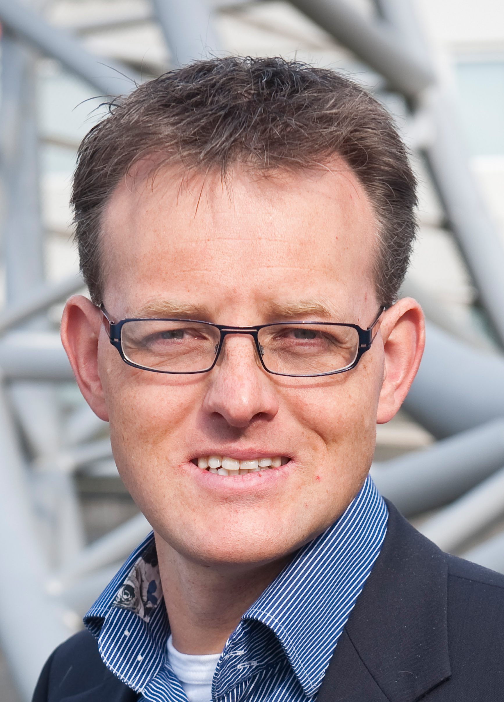

De volgende sprekers hebben toegezegd een lezing te zullen geven op het symposium SurroundIT:
- Henk Koopmans
- Jeroen Scheer (Alliander)
- Nico van der Aa
- Maarten Mijwaart (Nedap)
- Huib Pasman
- Leon Jansen (NS)
- Wouter van Kleunen
- generaal b.d. Dick Berlijn
Dagvoorzitters
 |
prof. dr. ir. Boudewijn HaverkortProf. dr. ir. Boudewijn Haverkort is in zijn carrière altijd betrokken geweest bij verschillende universiteiten, van Australië tot Duitsland en Nederland. Tegenwoordig is hij wetenschappelijk directeur en voorzitter van het Embedded Systems Institute in Eindhoven. Daarnaast is hij hoogleraar van de vakgroep Design and Analysis of Communication Systems aan de Universiteit Twente. Met zijn kritische blik is hij dagvoorzitter en zal hij onder andere de discussies leiden. |
Ruud Verbij BScRuud Verbij is student in de master Computer Science, specialisatie beveiliging aan de Universiteit Twente. In het collegejaar 2008-2009 is Ruud functionaris externe betrekkingen geweest bij studievereniging Inter-Actief. |
|
Henk KoopmansHenk Koopmans is directeur van Investures Management, vanuit zijn functie daar heeft hij veel ervaring met de praktijk. In het verleden is hij directeur geweest van Sensor Universe, hierdoor heeft Henk Koopmans ervaring met smart sensor systems. Hij gaat spreken over de dramatische maatschappelijke veranderingen door Smart Surroundings. Hij zal tijdens zijn lezing de bezoeker prikkelen door unieke maatschappelijke inzichten. |
|
|  |
Jeroen ScheerJeroen Scheer is manager Taskforce EnergieTransitie bij Alliander en is gespecialiseerd in Smart Grids. Smart Grids zijn technologieën om elektriciteitsnetwerken te beheren. Dit wordt van steeds groter belang nu er steeds meer apparaten zijn die aan het elektriciteitsnetwerk worden gehangen en vaak ook nog tegelijk, denk hierbij aan elektrische auto’s die iedereen bij thuiskomst op gaat laden. Maar ook de toenemende hoeveelheid aan zonnepanelen en de bijbehorende terugvoer van energie valt hieronder. Jeroen Scheer gaat ons vertellen en laten zien wat Smart Grids voor effect hebben in ons huis maar ook in de transformatorhuisjes. |
Nico van der AaNico van der Aa is team leader bij Noldus Information Technology BV op het gebied van automatische herkenning van menselijk gedrag. Geen intelligente omgeving kan zonder enige vorm van observatie van menselijk gedrag. Hoewel de mens zelf zeer goed getraind is in het observeren van menselijk gedrag, is het nog steeds een uitdaging om dit een systeem te laten doen. Met behulp van bestaande meetapparatuur proberen we het gedrag van mensen te analyseren in speciale toepassingen waarbij de mensen zich op natuurlijke wijze kunnen gedragen. Denk hierbij aan eetgedrag in een restaurant, klikgedrag achter een pc, rijgedrag in een auto of het loopgedrag in een museum. In zijn presentatie zal hij een overzicht geven van diverse toepassingen, waarbij het observeren van mensen belangrijk is, en dieper ingaan op de bijbehorende informatica aspecten. |
|
Maarten MijwaartMaarten Mijwaart is in 2006 bij Nedap begonnen als Senior Business Development Manager Security Management, in 2010 is hij aangesteld als Business Unit manager van de Nedap AVI (Automated vehicle identification) group. Maarten Mijwaart zal komen spreken over Smart mobility, Vehicle Identification en Smart Cities. Nedap heeft systemen voor Smart Mobility over de hele wereld afgeleverd, onder andere ook voor de Burj Khalifa in Dubai. |
|
Huib PasmanHuib Pasman is Strategische Verkenner bij TNO Technical Sciences. In deze functie onderzoekt hij hoe je slimme systemen kunt ontwikkelen die nieuwe intelligente toepassingen in de toekomst mogelijk maken. Hierbij staat het gebruik van sensoren centraal. Door sensoren op een zodanige manier te gebruiken dat de juiste informatie uit de omgeving wordt opgenomen, kan op de omgeving worden ingespeeld. Huib Pasman gaat ons uitleggen hoe auto’s gebruik kunnen maken van slimme sensoren, waardoor auto’s bijvoorbeeld automatisch kunnen invoegen op de snelweg. |
|
Leon JansenLeon Jansen is in 2003 begonnen bij de Nederlandse Spoorwegen en was verantwoordelijk voor de vervanging van de ICT systemen die de planning van de treinen organiseerde, in 2006 is hij aangesteld als Hoofd Jaarplan/Dagplan. In 2008 is hij aangesteld als hoofd IT Operations van de Nederlandse Spoorwegen. Leon Jansen vertelt wat NS doet met een wereld die telkens dichter bij mensen staat. Hij zal vertellen hoe een heel groot bedrijf toch elke klant individuele informatie aan kan bieden. |
|
Wouter van KleunenWouter van Kleunen is PhD student aan de Universiteit Twente, hij houdt zich bezig met sensor netwerken. In 2012 is hij samen met Bram Dil begonnen aan een startup, Locuspositioning. Hij zal vertellen over hoe hij de stap van student naar ondernemer heeft meegemaakt en hoe hij de funding voor de Locuspositioning rondkrijgt. Daarnaast zal hij vertellen hoe Locuspositioning positionering binnen gebouwen uitgewerkt heeft. |
|
generaal b.d. Dick BerlijnDick Berlijn was van 2005 tot en met 2007 Commandant der Strijdkrachten. Tegenwoordig is hij Senior Board Advisor bij Deloitte en is hij gespecialiseerd in security en privacy. Zijn lezing gaat dan ook over de veiligheid en privacy van Smart Surroundings. Smart Surroundings kunnen ons enorm helpen in het dagelijkse bestaan. Maar weten we wat er eigenlijk gedaan wordt met informatie die door Smart Surroundings verzameld wordt? Dick Berlijn zal ons laten nadenken over de gevolgen van Smart Surroundings. |